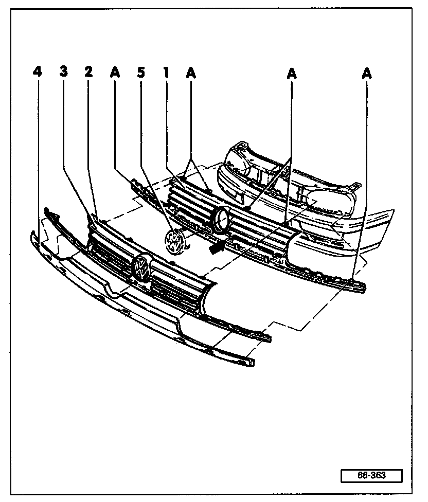

Grille: Service and Repair
Radiator Grill, Removing and Installing

1 Radiator grill - Golf
Material: ASA
Removing:
Remove screws -A-.
Unlock lower catches at each end with screwdriver.
Unlock remaining lower catches.
Using both hands, pull radiator grill upward off lock carrier.
Insert small tool (e.g. ice pick) into holes at -A- and press on catches (top of grill) and remove, then remove radiator grill.
Installing:
Align radiator grill with center positioner (arrow).
Fasten lower catches (end catches last).
Fasten top catches.
Install and tighten screws -A-.
2 Radiator grill - GTI
Material: ASA
Removing:
Remove screws -A-.
Unlock lower catches at each end with screwdriver.
Unlock remaining lower catches.
Using both hands, pull radiator grill upward off lock carrier. Insert small tool (e.g. ice pick) into holes at -A- and press on catches (top of grill) and remove, then remove radiator grill.
Installing:
Align radiator grill with center positioner (arrow).
Fasten lower catches (end catches last).
Fasten top catches.
Install and tighten screws -A-.
3 Radiator grill fins - GTI
Material: ABS (acrylic-nitrile butadiene-styrene copolymeride)
Clipped in radiator grill -2-
Painted in body color
4 Panel
Removing: Remove radiator grill and unclip panel from radiator grill.
Painted in body color
5 VW emblem
Clipped in radiator grill
CAUTION! Remove and install the VW emblem -5- very carefully to avoid damaging the paint finish.